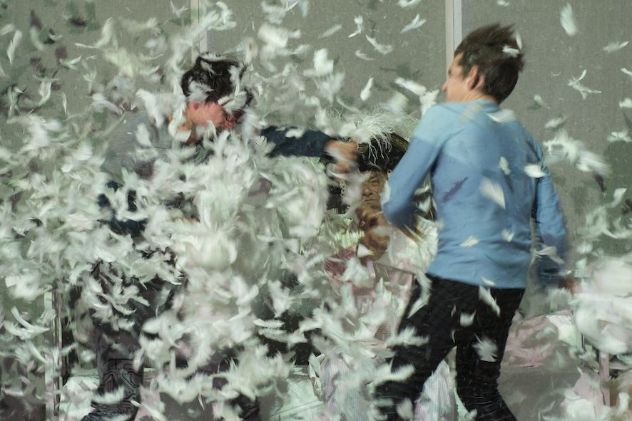
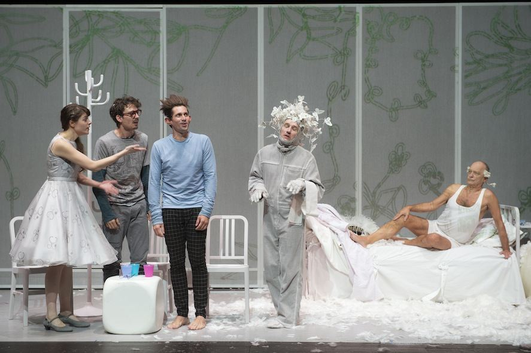
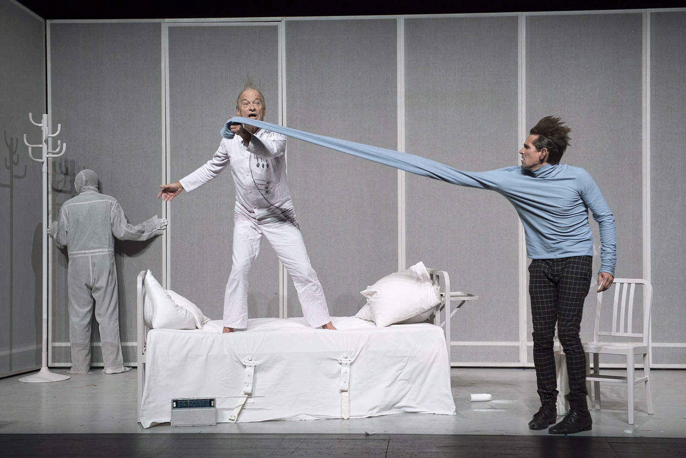
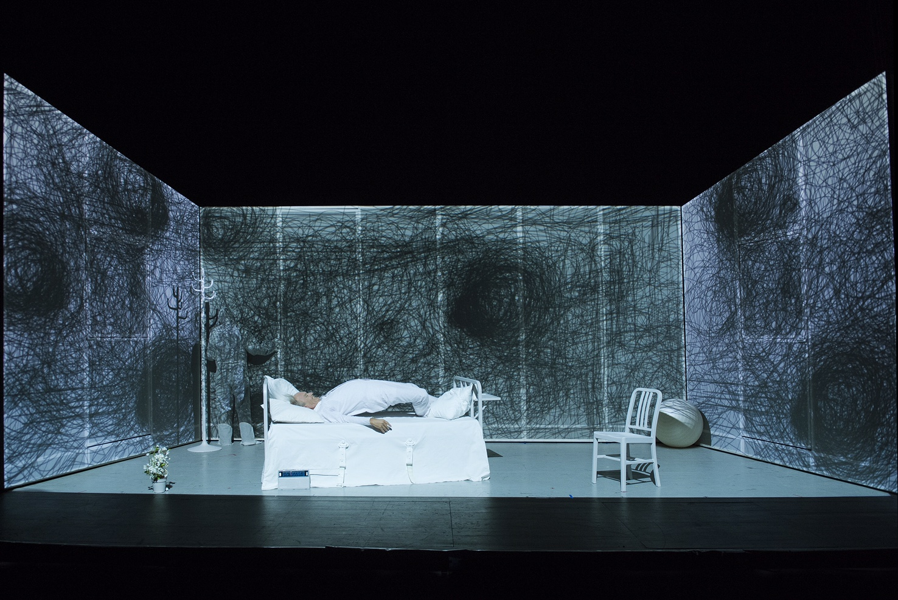
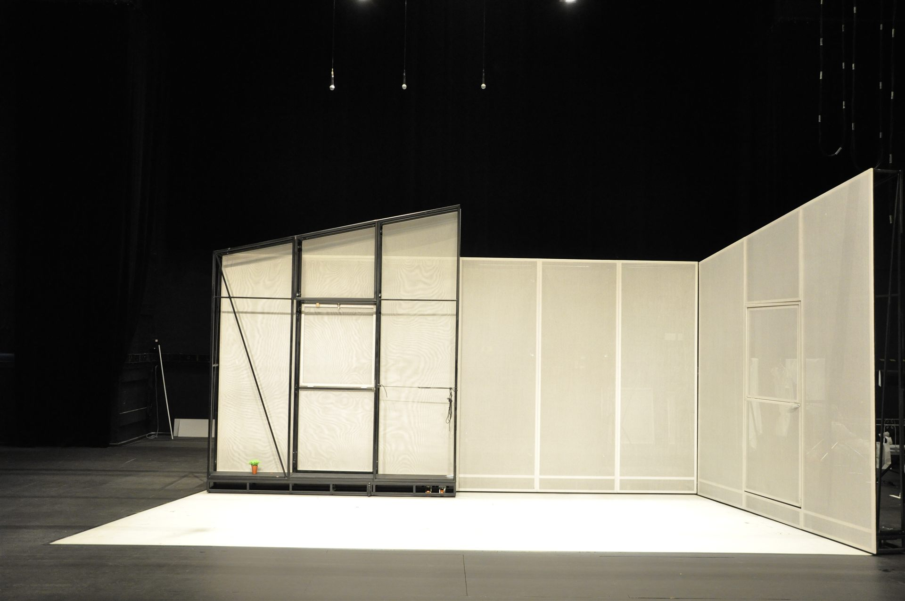
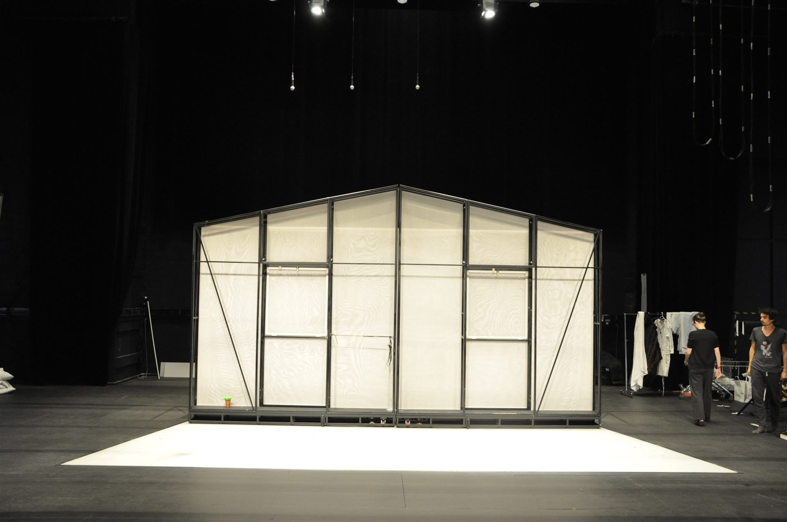
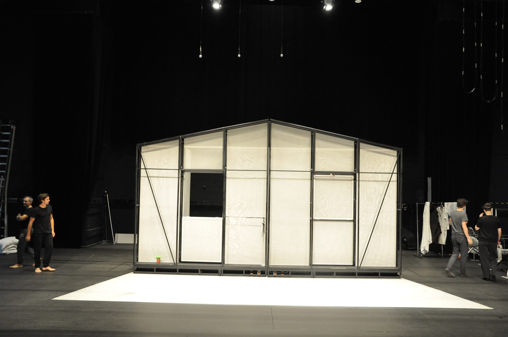
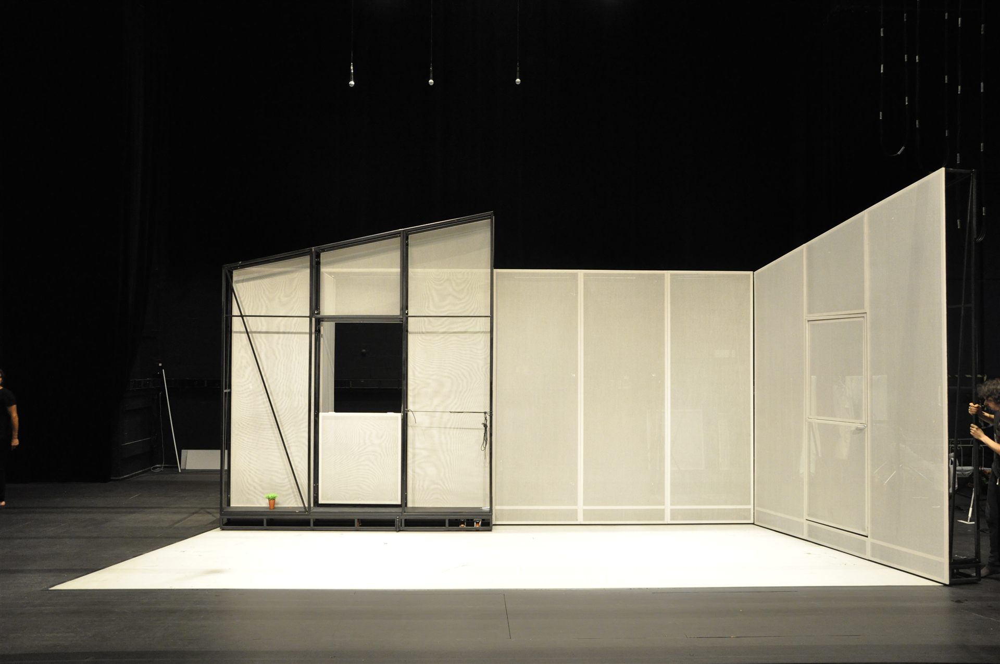

Münchhausen? — Fabrice Melquiot’s theatrical adaptation of the legendary Baron, directed by Joan Mompart with set design by Cristian Taraborrelli. A mobile scenography animated by videomapping that celebrates the fantasy and absurdity of Baron Münchhausen’s world. Through digital special effects and theatrical cunning, the audience is projected into the heart of the Baron’s unheard-of adventures.
Münchhausen? — l’adattamento teatrale di Fabrice Melquiot del leggendario Barone, diretto da Joan Mompart con scenografia di Cristian Taraborrelli. Una scenografia mobile animata da un videomapping che celebra la fantasia e l’assurdità del mondo del Barone di Münchhausen. Grazie ad abili effetti speciali digitali e astuzie teatrali, veniamo proiettati al centro delle inaudite avventure del Barone.
Münchhausen? — l’adaptation théâtrale de Fabrice Melquiot du légendaire Baron, mise en scène par Joan Mompart avec scénographie de Cristian Taraborrelli. Une scénographie mobile animée par un vidéomapping qui célèbre la fantaisie et l’absurdité du monde du Baron de Münchhausen. Grâce à d’habiles effets spéciaux numériques et des astuces théâtrales, nous sommes projetés au cœur des aventures inouïes du Baron.
An ageing Baron lies in a hospital bed, strapped down, tended by nurses, visited by his twenty-seventh son on his thirtieth birthday. He refuses to die. He has been alive for two hundred and ninety-six years. He rises, climbs onto the bed frame with trembling knees, and demands his horse. The adventure begins — or rather, begins again — because for Münchhausen, reality is only the overture to something far more interesting.
Fabrice Melquiot’s adaptation reinvents the 18th-century tales of Karl Friedrich Hieronymus, Baron von Münchhausen. He gives the Baron a son — named simply “Moi” — who, at thirty, can no longer stand his father’s stories. Yet through the telling, something shifts: the son becomes the narrator, the stories become his own, and what was once paternal mythology transforms into a personal archaeology of the imagination.
There are cyclops and Russians, lions and crocodiles, a cannonball ridden like Bucephalus, Venus and Vulcan, a journey to the centre of the earth and another to the depths of the sea, a gigantic whale, fabulous apparitions and magical disappearances. The Baron’s companions bear impossible gifts: Cavallo, faster than the wind; Hercule, stronger than the mythological original; Ouragane, whose breath surpasses hurricanes; J’écoute, who can hear the grass grow.
Un Barone anziano giace in un letto d’ospedale, legato con cinghie, accudito da infermiere, visitato dal suo ventisettesimo figlio nel giorno del suo trentesimo compleanno. Rifiuta di morire. È vivo da duecentonovantasei anni. Si alza, sale sulla struttura del letto con le ginocchia tremanti e chiede il suo cavallo. L’avventura comincia — o piuttosto ricomincia — perché per Münchhausen la realtà è solo l’ouverture di qualcosa di molto più interessante.
L’adattamento di Fabrice Melquiot reinventa i racconti settecenteschi di Karl Friedrich Hieronymus, Barone di Münchhausen. Dona al Barone un figlio — chiamato semplicemente “Moi” — che a trent’anni non sopporta più le storie di suo padre. Eppure, nel raccontarle, qualcosa cambia: il figlio diventa il narratore, le storie diventano le sue, e quella che era mitologia paterna si trasforma in un’archeologia personale dell’immaginazione.
Ci sono ciclopi e russi, leoni e coccodrilli, una palla di cannone cavalcata come Bucefalo, Venere e Vulcano, un viaggio al centro della terra e un altro nelle profondità del mare, una balena gigantesca, apparizioni favolose e sparizioni magiche. I compagni del Barone portano doni impossibili: Cavallo, più veloce del vento; Ercole, più forte dell’originale mitologico; Ouragane, il cui soffio supera gli uragani; J’écoute, che può sentire l’erba crescere.
Un Baron âgé gît dans un lit d’hôpital, sanglé, soigné par des infirmières, visité par son vingt-septième fils le jour de ses trente ans. Il refuse de mourir. Il est vivant depuis deux-cent-nonante-six ans. Il se lève, grimpe sur le cadre du lit avec les genoux qui flageolent, et réclame son cheval. L’aventure commence — ou plutôt recommence — car pour Münchhausen, la réalité n’est que l’ouverture de quelque chose de bien plus intéressant.
L’adaptation de Fabrice Melquiot réinvente les récits du XVIIIe siècle de Karl Friedrich Hieronymus, Baron de Münchhausen. Il donne au Baron un fils — nommé simplement « Moi » — qui, à trente ans, ne supporte plus les histoires de son père. Pourtant, en les racontant, quelque chose bascule : le fils devient le narrateur, les histoires deviennent les siennes, et ce qui était mythologie paternelle se transforme en une archéologie personnelle de l’imagination.
Il y a des cyclopes et des Russes, des lions et des crocodiles, un boulet de canon qu’on enfourche comme Bucéphale, Vénus et Vulcain, un voyage au centre de la terre et un autre dans les profondeurs de la mer, une baleine gigantesque, des apparitions fabuleuses et des disparitions magiques. Les compagnons du Baron portent des dons impossibles : Cavallo, plus rapide que le vent ; Hercule, plus fort que l’original mythologique ; Ouragane, dont le souffle surpasse les ouragans ; J’écoute, qui peut entendre l’herbe pousser.
Gallery





La Visione
Together with Joan Mompart, Cristian Taraborrelli conceived a multidimensional space shaped like a sphere — evoking at once the Moon, the Baron’s cannonball, and the belly of the whale. The design deliberately abandoned the sensation of gravity: up and down could be inverted, walls became floors, and the hospital bed transformed into a ship, a cannon, a cosmic vehicle.
The scenography was a mobile architecture animated by videomapping, created by Brian Tornay. Digital projections wrapped around the set pieces, turning flat surfaces into oceanic depths, lunar landscapes, and the inside of a gigantic whale. The challenge was to merge the purest theatrical craftsmanship — the artisanal tradition of rope and canvas — with the most advanced digital technologies available to contemporary stages.
The Baron’s fantastical universe demanded this reconciliation: every lie told on stage had to be visually believable, every impossible journey had to feel physically real. The videomapping did not merely illustrate the text — it extended the storytelling into the architecture itself, making the set a living, breathing participant in the Baron’s mythology.
Insieme a Joan Mompart, Cristian Taraborrelli ha concepito uno spazio multidimensionale a forma di sfera — evocando al contempo la Luna, la palla di cannone del Barone e il ventre della balena. Il progetto abbandonava deliberatamente la sensazione di gravità: l’alto e il basso potevano invertirsi, i muri diventavano pavimenti, e il letto d’ospedale si trasformava in una nave, un cannone, un veicolo cosmico.
La scenografia era un’architettura mobile animata da videomapping, creato da Brian Tornay. Le proiezioni digitali avvolgevano gli elementi scenici, trasformando superfici piatte in profondità oceaniche, paesaggi lunari e l’interno di una balena gigantesca. La sfida era fondere l’artigianato teatrale più puro — la tradizione di corde e tela — con le tecnologie digitali più avanzate delle scene contemporanee.
L’universo fantastico del Barone esigeva questa conciliazione: ogni bugia raccontata sulla scena doveva essere visivamente credibile, ogni viaggio impossibile doveva sembrare fisicamente reale. Il videomapping non si limitava a illustrare il testo — estendeva la narrazione nell’architettura stessa, rendendo la scenografia una partecipante viva e pulsante nella mitologia del Barone.
Avec Joan Mompart, Cristian Taraborrelli a conçu un espace multidimensionnel en forme de sphère — évoquant à la fois la Lune, le boulet de canon du Baron et le ventre de la baleine. Le dispositif abandonnait délibérément la sensation de gravité : le haut et le bas pouvaient s’inverser, les murs devenaient des sols, et le lit d’hôpital se transformait en navire, en canon, en véhicule cosmique.
La scénographie était une architecture mobile animée par le vidéomapping, créé par Brian Tornay. Les projections numériques enveloppaient les éléments scéniques, transformant des surfaces planes en profondeurs océaniques, paysages lunaires et intérieur d’une baleine gigantesque. Le défi était de fusionner l’artisanat théâtral le plus pur — la tradition de la corde et de la toile — avec les technologies numériques les plus avancées des scènes actuelles.
L’univers éminemment fantaisiste du Baron exigeait cette conciliation : chaque mensonge raconté sur scène devait être visuellement crédible, chaque voyage impossible devait sembler physiquement réel. Le vidéomapping ne se contentait pas d’illustrer le texte — il prolongeait la narration dans l’architecture même, faisant du décor un participant vivant et palpitant à la mythologie du Baron.
Scenography




The Venue
Münchhausen? premiered at the Théâtre Am Stram Gram in Geneva, one of Europe’s rare theatres dedicated to creation for all audiences from the youngest age. Under the artistic direction of Fabrice Melquiot since 2012, Am Stram Gram maintains a year-round professional programme and serves as an international centre for theatrical creation. The production then toured extensively across francophone Switzerland and into France — from Neuchâtel to Yverdon-les-Bains, from Belfort to Lausanne, from Villars-sur-Glâne to the Journées du Théâtre Suisse 2016, where it was selected as a representative work of Swiss theatrical excellence.
Münchhausen? ha debuttato al Théâtre Am Stram Gram di Ginevra, uno dei rari teatri europei dedicato alla creazione per tutti i pubblici fin dalla più tenera età. Sotto la direzione artistica di Fabrice Melquiot dal 2012, Am Stram Gram mantiene una programmazione professionale annuale e funge da centro internazionale per la creazione teatrale. La produzione ha poi girato ampiamente nella Svizzera francofona e in Francia — da Neuchâtel a Yverdon-les-Bains, da Belfort a Losanna, da Villars-sur-Glâne alle Journées du Théâtre Suisse 2016, dove è stata selezionata come opera rappresentativa dell’eccellenza teatrale svizzera.
Münchhausen? a été créé au Théâtre Am Stram Gram à Genève, l’un des rares théâtres européens dédiés à la création pour tous les publics dès le plus jeune âge. Sous la direction artistique de Fabrice Melquiot depuis 2012, Am Stram Gram maintient une programmation professionnelle annuelle et sert de centre international de création théâtrale. Le spectacle a ensuite tourné largement en Suisse romande et en France — de Neuchâtel à Yverdon-les-Bains, de Belfort à Lausanne, de Villars-sur-Glâne aux Journées du Théâtre Suisse 2016, où il a été sélectionné comme œuvre représentative de l’excellence théâtrale suisse.
Curiosità
- The real Baron von Münchhausen (1720–1797) was a German nobleman and cavalry officer who served in the Russian army fighting the Ottomans. His gift for outrageous storytelling became so famous that his name was given to a psychiatric condition — Münchhausen syndrome — characterised by the compulsion to fabricate illness. Il vero Barone di Münchhausen (1720–1797) era un nobile tedesco e ufficiale di cavalleria che servì nell’esercito russo contro gli Ottomani. Il suo dono per racconti stravaganti divenne così famoso che il suo nome fu dato a una condizione psichiatrica — la sindrome di Münchhausen — caratterizzata dalla compulsione a simulare malattie. Le véritable Baron de Münchhausen (1720–1797) était un noble allemand et officier de cavalerie qui servit dans l’armée russe contre les Ottomans. Son don pour les récits extravagants devint si célèbre que son nom fut donné à une pathologie psychiatrique — le syndrome de Münchhausen — caractérisé par la compulsion à simuler des maladies.
- The original music was composed by Simon Aeschimann and recorded by L’Ensemble Contrechamps, one of Switzerland’s most prestigious contemporary music ensembles, co-producing the show alongside Am Stram Gram. La musica originale è stata composta da Simon Aeschimann e registrata dall’Ensemble Contrechamps, uno degli ensemble di musica contemporanea più prestigiosi della Svizzera, coproduttore dello spettacolo insieme ad Am Stram Gram. La musique originale a été composée par Simon Aeschimann et enregistrée par L’Ensemble Contrechamps, l’un des ensembles de musique contemporaine les plus prestigieux de Suisse, coproducteur du spectacle avec Am Stram Gram.
- Joan Mompart’s personal connection to the material runs deep: he played Don Quixote in Omar Porras’s legendary Ay Quixote in 2002, and Melquiot saw him in the role at the Théâtre de la Ville in Paris. Both Münchhausen and Quixote belong to the same family of visionary, naïve heroes. Il legame personale di Joan Mompart con il materiale è profondo: nel 2002 interpretava Don Chisciotte nel leggendario Ay Quixote di Omar Porras, e Melquiot lo vide nel ruolo al Théâtre de la Ville di Parigi. Sia Münchhausen che Chisciotte appartengono alla stessa famiglia di eroi visionari e ingenui. Le lien personnel de Joan Mompart avec le matériau est profond : en 2002, il jouait Don Quichotte dans le légendaire Ay Quixote d’Omar Porras, et Melquiot l’a vu dans le rôle au Théâtre de la Ville à Paris. Münchhausen et Quichotte appartiennent à la même famille de héros visionnaires et naïfs.
- The production was selected for the Journées du Théâtre Suisse 2016, a national showcase that celebrates the best of Swiss theatrical creation across all language regions. La produzione è stata selezionata per le Journées du Théâtre Suisse 2016, una vetrina nazionale che celebra il meglio della creazione teatrale svizzera di tutte le regioni linguistiche. Le spectacle a été sélectionné pour les Journées du Théâtre Suisse 2016, une vitrine nationale qui célèbre le meilleur de la création théâtrale suisse de toutes les régions linguistiques.
- The masks and make-up were created by Cécile Kretschmar, a renowned Swiss specialist in theatrical prosthetics and creature design, assisted by Malika Stéhli. Le maschere e il trucco sono stati creati da Cécile Kretschmar, rinomata specialista svizzera in protesi teatrali e creature design, assistita da Malika Stéhli. Les masques et le maquillage ont été créés par Cécile Kretschmar, renommée spécialiste suisse en prothèses théâtrales et creature design, assistée de Malika Stéhli.
Creative Team
Cast
Press
Tags